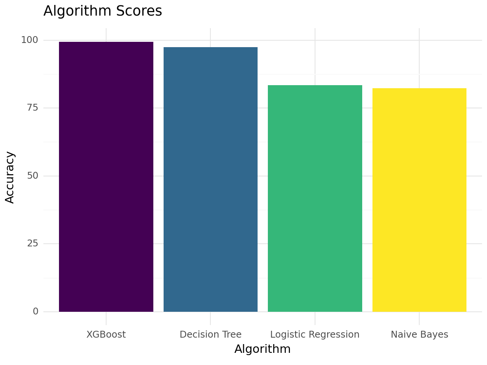
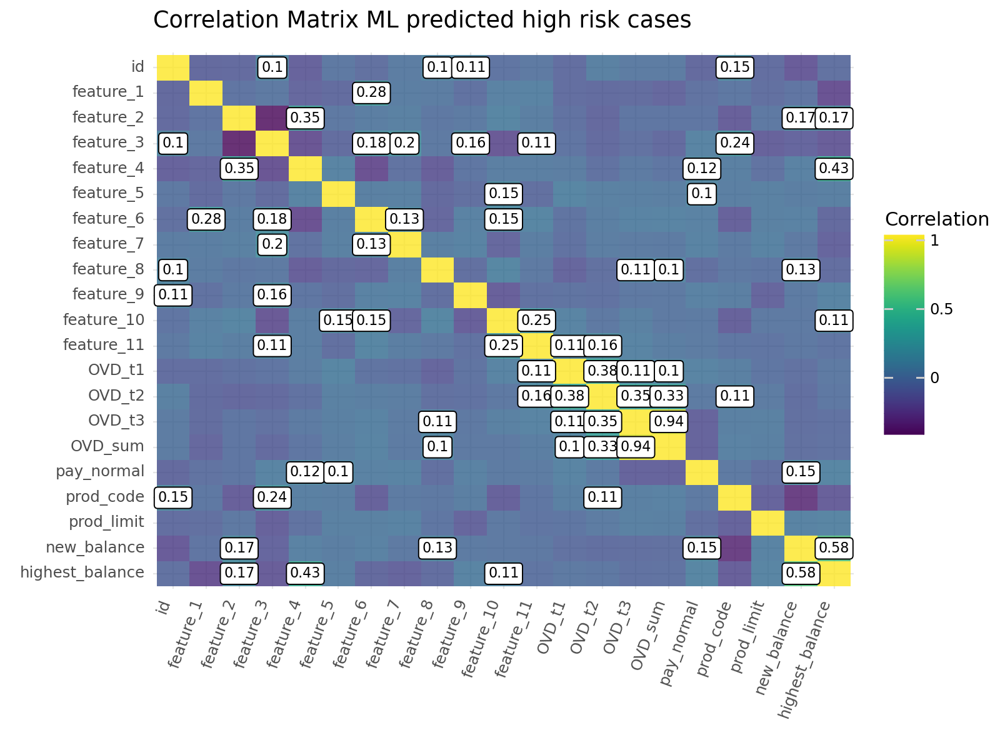
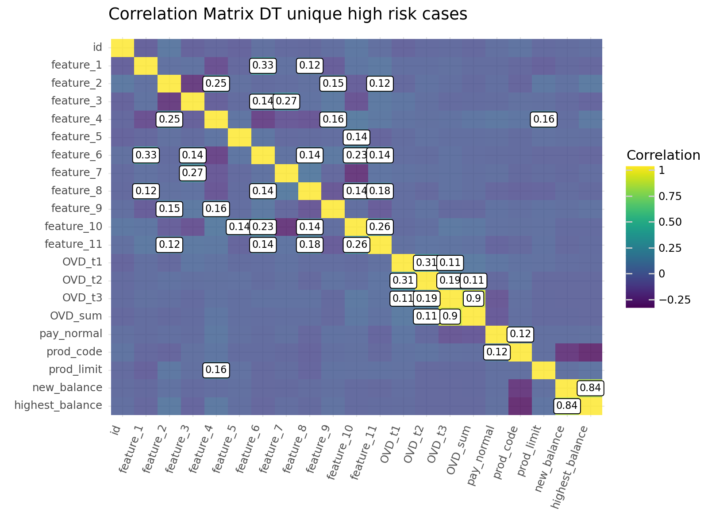

flowchart TD
A[Input data] --> B(EDA)
B --> C{Analysis}
C --> D{Logistic Regression}
C --> E{Naive Bayes}
C --> F{Decision Tree Classifier}
C --> G{XGBoost}
D --> H{Accuracy assessment}
E --> H{Accuracy assessment}
F --> H{Accuracy assessment}
G --> H{Accuracy assessment}
H --> I{Reporting}
I --> J{Select best two methods}
J --> K{Compare common and unique predictions}
Credit Risk Analysis - ML models
Aim
The aim of this analysis is to determine credit risk based on customer behaviour regarding engagement with financial products as well as a variety of demographic attributes that may be informative.
It’s worth noting that the dataset already contains information about credit risk
Data source
In this analysis I’m using a Kaggle credit risk dataset described here
The data is structured in two csv files:
- File 1 - Payment data contains customer’s credit card payment history and has the following fields:
- id: customer id
- OVD_t1: number of times overdue type 1
- OVD_t2: number of times overdue type 2
- OVD_t3: number of times overdue type 3
- OVD_sum: total overdue days
- pay_normal: number of times normal payment
- prod_code: credit product code
- prod_limit: credit limit of product
- update_date: account update date
- new_balance: current balance of product
- highest_balance: highest balance in history
- report_date: date of recent payment
- File 2 - Customer data which contains demographic data and category attributes that have been anonymised as follows:
- id
- label: if it equals 1 it indicates the customer is high risk, if it equals 0 the customer is low risk
- fea_1
- fea_2
- fea_3
- fea_4
- fea_5
- fea_6
- fea_7
- fea_8
- fea_9
- fea_10
- fea_11
Methodology
I have decided to make a second report where I concentrate on ML models because neural networks offered no significant improvement in accuracy of prediction for far more computational cost.
Below is the amended flowchart
Input data pre-processing
Note:
After some standard pre-processing (renaming columns, concatenating data frames, and checking for missing data) I decided that data imputation was not appropriate while low credit risk customers might pay their full balance or higher amounts consistently on the same date, high risk customers would exhibit far more variance on both the date of balance closing and last payments made. I personally feel the variable ‘pay_normal’ (i.e. the number of times a customer does not default on payments) captures this information in a discretised manner that does not rely on following a Poisson distribution of events.
In short, I have decided that dropping update_date, and report_date variables was justified. I did however use KNN imputation to fill missing values for feature_2, prod_limit (the credit limit), and highest_balance features, the data for feature 2 appears to be normally distributed, while the prod_limit appears to be close to normally distributed but has a small number of outliers. The highest_balance variable exhibits most values centered close to zero but extremely long tail all the way out to 150,000,000.
No missing values present after pre-processing
merged_df.info()<class 'pandas.core.frame.DataFrame'>
Int64Index: 8250 entries, 0 to 8249
Data columns (total 21 columns):
# Column Non-Null Count Dtype
--- ------ -------------- -----
0 id 8250 non-null int64
1 feature_1 8250 non-null int64
2 feature_2 8250 non-null float64
3 feature_3 8250 non-null int64
4 feature_4 8250 non-null float64
5 feature_5 8250 non-null int64
6 feature_6 8250 non-null int64
7 feature_7 8250 non-null int64
8 feature_8 8250 non-null int64
9 feature_9 8250 non-null int64
10 feature_10 8250 non-null int64
11 feature_11 8250 non-null float64
12 OVD_t1 8250 non-null int64
13 OVD_t2 8250 non-null int64
14 OVD_t3 8250 non-null int64
15 OVD_sum 8250 non-null int64
16 pay_normal 8250 non-null int64
17 prod_code 8250 non-null int64
18 prod_limit 8250 non-null float64
19 new_balance 8250 non-null float64
20 highest_balance 8250 non-null float64
dtypes: float64(6), int64(15)
memory usage: 1.4 MBIt would be good to visualise how the different variables correlate with one another.
Technical note: The plot was generated with plotnine following Tidyverse principles which I find to be superior to Python libraries
/home/jgamboa/anaconda3/lib/python3.10/site-packages/plydata/cat_tools.py:443: FutureWarning: The `inplace` parameter in pandas.Categorical.reorder_categories is deprecated and will be removed in a future version. Reordering categories will always return a new Categorical object.
/home/jgamboa/anaconda3/lib/python3.10/site-packages/plotnine/scales/scale.py:143: PlotnineWarning: scale_fill_cmap could not recognise parameter `cmap`<Figure Size: (800 x 600)>Analyses
First thing here is to store the label used to classify a customer as high or low credit risk and store it as the response variable for all our models while keeping everything else as our predictor variables
ML models
Four methods will be used, Logistic Regression (LR), Naive Bayes (NB), a Decision Tree Classifier (DT), and XGBoost (XGB). The dataset is split into training and test sets, 70% is kept for the training set and 30% will be used as a test set.
Hyperparameter tuning was performed for both the DT and XGB models
The code is not shown but the prediction accuracy is reported below
Best random state after hyperparameter tuning for the Decision Tree Classifier
136
Best random state after hyperparameter tuning for XGBoost
0Reporting the results of our models

Selecting the best methods based on the accuracy scores
The reason why one would want to consider selecting the results of more than one method are many. For one, the way a given classifier method might choose a given outcome may be affected by specific statistical quirks of each method, for closely scoring methods one may want to see what predicted IDs are common to both methods and which ones aren’t in order to better understand what parameters might be more relevant to each model.
Visualising differences between the predicted customers common to both models and those that are unique to either model
Plot all high risk cases predicted by both XGBoost and DT models
/home/jgamboa/anaconda3/lib/python3.10/site-packages/plydata/cat_tools.py:443: FutureWarning: The `inplace` parameter in pandas.Categorical.reorder_categories is deprecated and will be removed in a future version. Reordering categories will always return a new Categorical object.
/home/jgamboa/anaconda3/lib/python3.10/site-packages/plotnine/scales/scale.py:143: PlotnineWarning: scale_fill_cmap could not recognise parameter `cmap`
<Figure Size: (800 x 600)>And those predicted by XGBoost but not the Decision Tree Classifier model
/tmp/ipykernel_61775/2740749301.py:4: FutureWarning: The default value of numeric_only in DataFrame.corr is deprecated. In a future version, it will default to False. Select only valid columns or specify the value of numeric_only to silence this warning.
/home/jgamboa/anaconda3/lib/python3.10/site-packages/plydata/cat_tools.py:443: FutureWarning: The `inplace` parameter in pandas.Categorical.reorder_categories is deprecated and will be removed in a future version. Reordering categories will always return a new Categorical object.
/home/jgamboa/anaconda3/lib/python3.10/site-packages/plotnine/scales/scale.py:143: PlotnineWarning: scale_fill_cmap could not recognise parameter `cmap`<Figure Size: (800 x 600)>Finally those predictions made by the Decision Tree Classifier model but not XGBoost
/tmp/ipykernel_61775/2692289710.py:3: FutureWarning: The default value of numeric_only in DataFrame.corr is deprecated. In a future version, it will default to False. Select only valid columns or specify the value of numeric_only to silence this warning.
/home/jgamboa/anaconda3/lib/python3.10/site-packages/plydata/cat_tools.py:443: FutureWarning: The `inplace` parameter in pandas.Categorical.reorder_categories is deprecated and will be removed in a future version. Reordering categories will always return a new Categorical object.
/home/jgamboa/anaconda3/lib/python3.10/site-packages/plotnine/scales/scale.py:143: PlotnineWarning: scale_fill_cmap could not recognise parameter `cmap`
<Figure Size: (800 x 600)>We can see that the features that matter to predict high risk are the same for both XGBoost and DT models. However, there are some differences in the correlation values possibly arising from differences in sensitivity between ensemble models (XGBoost) and other classifier models such as decision tree classifiers. Whether the sensitivity threshold in making these predictions should be tweaked or not would depend on how much risk can be tolerated but both models perform well, although XGBoost shows marginally better performance.